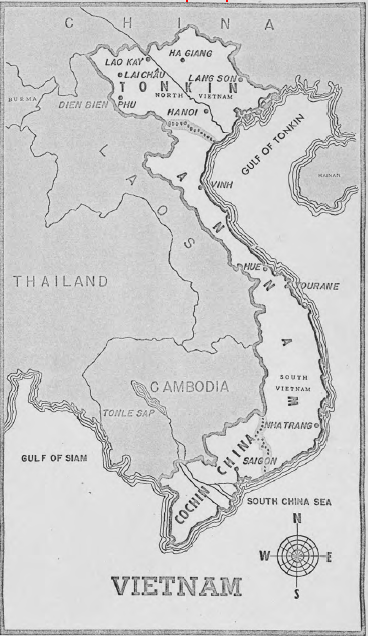

Phần nghiên cứu này nói về chính sách của Mỹ đối với Việt Nam trong hai thập kỷ (1940-50) của Thế Chiến II và hậu quả của nó. Nó được chia thành ba mục. Mục A mô tả chính sách của Mỹ đối với Đông Dương, và cuộc chiến đang xảy ra giữa Pháp và Việt Minh theo cách nhìn của Washington. Mục B phân tích tính chất và sức mạnh của Việt Minh cũng như xem xét vai trò của Cộng Sản Việt Nam trong Việt Minh. Phần C thảo luận về cơ đồ chính trị của Hồ Chí Minh hầu đánh giá tiềm năng cho một thế đứng trung lập trong cuộc xung đột Đông – Tây. Mỗi chuyên khảo được hỗ trợ bởi các bản đồ và biểu đồ dưới đây..
Chính sách của Mỹ, 1940-1950
Các nhân vật và sức mạnh của Việt Minh
Hồ Chí Minh: một Tito của Á Châu?
Bản đồ và Biểu đồ (Xem “tabs” mầu xanh)
Nam Kỳ, An Nam, Bắc Kỳ
Quan hệ Pháp-Việt Nam
Quốc Dân Đảng Việt Nam
Đảng Cộng Sản, 1921-1931
Đảng Cộng sản, 1931-1945
Chính trị ở miền Bắc Việt Nam năm 1945
Những chính phủ Việt Nam, 1945-1949
Những phong trào chính trị ở Việt Nam, 1947-1950
Mức độ kiểm soát của Việt Minh, năm 1949
Hồ Chí Minh theo trình tự thời gian
Nam Kỳ, An Nam, Bắc Kỳ

Giải mật theo Sắc Lệnh Chính Phủ số 13526, Phần 3.3 NND số dự án: NND 63316. Bởi: NWD ngày: 2011
TOP SECRET – Tối Mật